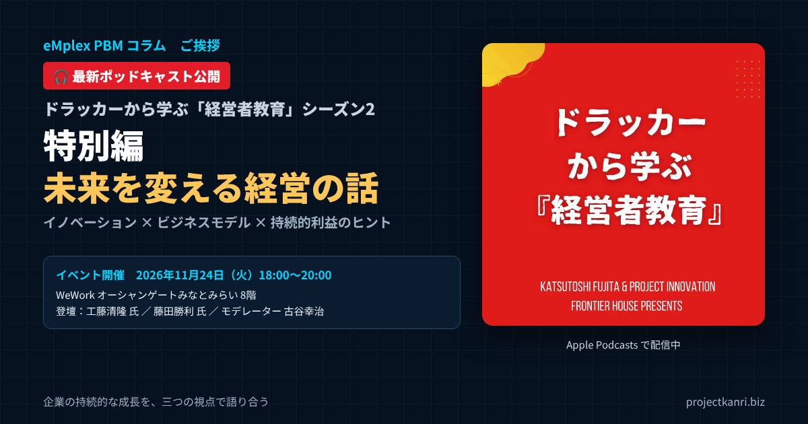
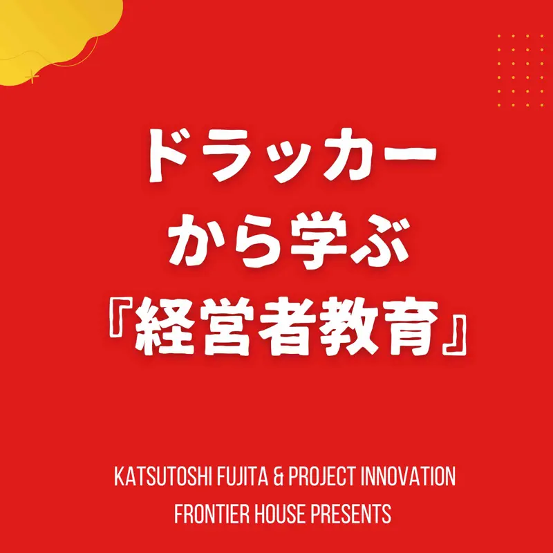

最新ポッドキャスト公開｜『ドラッカーから学ぶ「経営者教育」シーズン2』特別編「未来を変える経営の話」―イノベーション×ビジネスモデル×持続的利益のヒント、2026年11月24日開催イベントのご紹介

最新エピソード「特別編 未来を変える経営の話」を公開しました
このエピソードの概要
- 番組：ドラッカーから学ぶ「経営者教育」シーズン2
- エピソード：特別編「未来を変える経営の話」
- 内容：2026年11月24日（火）開催のイベント「未来を変える経営の話〜イノベーション × ビジネスモデル × 持続的利益のヒント〜」のご紹介
- 登壇者：工藤清隆氏（証券引受のプロフェッショナル）、藤田勝利氏（経営教育の専門家・ドラッカー研究者）、古谷幸治（モデレーター）
- 中心テーマ：企業の持続的な成長
プロジェクト管理会計士の古谷です。ポッドキャスト『ドラッカーから学ぶ「経営者教育」シーズン2』の最新エピソードとして、特別編「未来を変える経営の話」を公開しました。
この番組は、次世代の経営リーダーに向けて、実践的なマネジメントの知識やインスピレーションをお届けしているポッドキャストです。今回の特別編では、2026年11月24日に横浜のみなとみらいで開催するイベント「未来を変える経営の話〜イノベーション × ビジネスモデル × 持続的利益のヒント〜」の開催の概要と、そこで語り合いたいテーマをご紹介しています。

🎧 最新エピソードを聴く
ドラッカーから学ぶ「経営者教育」シーズン2 特別編「未来を変える経営の話」
Apple Podcastsで聴く
本記事では、エピソードでご紹介した内容をもとに、イベントの概要と登壇者のプロフィールを改めて整理するとともに、モデレーターを務める私自身が、当日どのような問いを掘り下げたいと考えているのかを、ドラッカーの考え方とプロジェクト管理会計の視点を交えてお伝えします。エピソードを聴く前の予習として、あるいは聴いた後の振り返りとして、お読みいただければ幸いです。
『ドラッカーから学ぶ「経営者教育」』とはどんな番組か
『ドラッカーから学ぶ「経営者教育」』は、経営学者ピーター・ドラッカーの思想を手がかりに、これからの経営を担うリーダーに必要な考え方を学ぶためのポッドキャストです。現在はシーズン2として配信しています。
ドラッカーというと、古典的な経営の理論を思い浮かべる方も多いかもしれません。しかし、ドラッカーが問い続けたのは、企業は何のために存在するのか、経営者は何に責任を持つべきなのか、知識を持って働く人の力をどう活かすのか、といった、時代が変わっても色あせない問いです。変化の激しい今の時代だからこそ、こうした本質的な問いに立ち返ることに意味があります。
番組では、理論の紹介にとどまらず、実際の経営の現場での意思決定や、組織づくり、新しい事業の創造といった、実践の視点を大切にしています。経営者の方はもちろん、これから経営の役割を担う方、経営を支える管理部門や専門家の方にも、通勤や移動の時間などに気軽に聴いていただける内容を目指しています。
番組のアートワークにもあるとおり、この番組は、藤田勝利氏と、私が代表を務めるプロジェクト・イノベーションがお届けし、フロンティアハウスが提供しています。経営教育の専門家と、経営管理の実務家が、それぞれの立場からドラッカーの考え方を現代の経営に引きつけて語る。その掛け合いも、番組の特徴の一つです。
シーズン2では、経営者の役割、組織と人のマネジメント、イノベーションと新しい事業の創造といったテーマを、実践の視点から取り上げています。過去のエピソードもApple Podcastsで聴くことができますので、今回の特別編をきっかけに、ぜひ番組全体をお楽しみください。
今回の特別編の位置づけ
今回のエピソードは、通常の回とは少し趣向を変えた特別編です。番組の中で、ライブのイベント「未来を変える経営の話」の開催をご案内し、イベントのテーマと登壇者をご紹介しています。
ポッドキャストは、話し手から聴き手へ、一方向に届けるメディアです。一方で、経営の学びは、異なる立場や経験を持つ人どうしが対話することで、より深まるものでもあります。今回のイベントは、番組で扱ってきたテーマを、会場で実際に対話しながら掘り下げる場として企画しました。ポッドキャストを聴いてくださっている方と、直接お会いできる機会にもしたいと考えています。
エピソードでは、イベントの開催の概要に加えて、なぜ今、企業の持続的な成長というテーマを取り上げるのか、どのような方に参加していただきたいのかもお話ししています。イベントへの参加を迷っている方は、ぜひエピソードを聴いてから判断していただければと思います。
番組をまだ聴いたことのない方にも、今回の特別編は、番組の雰囲気と問題意識を知っていただく入口として、ちょうどよいエピソードになっていると思います。
エピソードでご紹介している内容
今回のエピソードでご紹介しているのは、大きく三つの内容です。
| 内容 | 主なポイント |
|---|---|
| 開催概要 | 日時・会場・アクセス・お申し込み方法 |
| コンセプト | 持続的に成長する会社には理由がある、未来を変える経営者には志がある |
| 登壇者 | 資本市場・経営教育・経営管理の三つの視点 |
一つ目は、イベントの開催の概要です。日時、会場、アクセス、お申し込みの方法をお伝えしています。二つ目は、イベントのコンセプトです。持続的に成長する会社には理由がある、未来を変える経営者には志がある、という問題意識から、なぜ今このテーマを取り上げるのかをお話ししています。三つ目は、登壇者のご紹介です。証券の引受のプロフェッショナル、経営教育とドラッカーの研究者、そして経営管理のプロフェッショナルという三人が、それぞれどのような視点から企業の成長を語るのかをご紹介しています。
移動の時間や、仕事の合間に、ぜひ気軽に聴いてみてください。イベントに参加される方にとっては、当日の議論をより深く楽しんでいただくための予習にもなると思います。
会社のご同僚や経営のパートナーと一緒に聴いて、感想を話し合っていただくのも、とてもお勧めです。
イベント「未来を変える経営の話」開催概要
エピソードでご紹介したイベントの開催の概要は、次のとおりです。
| 項目 | 内容 |
|---|---|
| タイトル | 未来を変える経営の話〜イノベーション × ビジネスモデル × 持続的利益のヒント〜 |
| 日時 | 2026年11月24日（火）18:00〜20:00（受付開始 17:30） |
| 会場 | WeWork オーシャンゲートみなとみらい 8階（みなとみらい駅4番出口から徒歩2分） |
| スピーカー | 工藤清隆氏、藤田勝利氏 |
| モデレーター | 古谷幸治 |
| お申し込み | Peatix |
会場のWeWork オーシャンゲートみなとみらいは、みなとみらい駅の4番出口から徒歩2分の場所にあります。平日の夕方の開催ですので、お仕事の帰りにも立ち寄っていただきやすい時間帯です。受付は17時30分から開始します。
お申し込みは、Peatixのイベントページから受け付けています。開催の概要の詳細も、同じページでご確認いただけます。
📝 イベントのお申し込み
未来を変える経営の話〜イノベーション × ビジネスモデル × 持続的利益のヒント〜
Peatixのイベントページへ
イベントの詳細や最新の情報は、Peatixのページで随時ご案内します。
テーマ：イノベーション × ビジネスモデル × 持続的利益
持続的に成長する会社には理由がある。未来を変える経営者には志がある。今回のイベントは、この言葉から出発しています。
売上を伸ばすだけで、会社は本当に成長し続けられるでしょうか。事業を拡大しても利益が残りにくい。新しい挑戦をしたくても、次の一手が見えない。こうした悩みは、私が200社を超える会社をご支援してきた中で、多くの経営者の方から繰り返し伺ってきたものです。
変化の激しい時代に企業が持続的な成長を実現するためには、優れたビジネスモデルと、それを動かす経営者の資質、マインド、そして戦略的な思考が欠かせません。今回のイベントでは、異なる専門性と豊富な実践の経験を持つプロフェッショナルどうしが対話しながら、企業の成長の本質に迫ります。
単なるIPOのセミナーでも、マネジメント論の講演でもありません。「経営者の資質」と「成長を生み出す仕組み」の両面から、企業の未来を考える場です。資本市場の視点、経営教育とイノベーションの視点、そして経営管理の視点。三つの視点が交わることで、一つの視点だけでは見えない、企業の成長の全体像が見えてくるはずです。
イノベーション、ビジネスモデル、持続的な利益。この三つの言葉は、それぞれが一冊の本になるほどの大きなテーマですが、経営の現場では、いつも同時に問われています。
なぜ今、「企業の持続的な成長」なのか
今回のイベントで、企業の持続的な成長というテーマを選んだのには理由があります。
一つは、成長の質が問われる時代になっていることです。売上の規模の拡大だけを追う経営では、利益が残らず、次の投資ができず、やがて成長は止まります。人手の不足や、原材料や人件費の上昇といった環境の中で、どうすれば利益を確保しながら成長を続けられるのか。多くの経営者が、この問いに向き合っています。
もう一つは、上場をめぐる環境の変化です。上場の後も成長を続けることが、これまで以上に強く求められるようになっています。上場はゴールではなく、成長のための手段の一つです。上場を目指す会社にとっても、上場を目指さない会社にとっても、長期的にどのような収益の構造で成長していくのかを描くことの重要性は高まっています。
そして、AIをはじめとする技術の進歩です。業務の効率化の可能性が大きく広がる一方で、人間にしかできない仕事とは何か、組織の中で人の力をどう活かすのかという問いが、改めて浮かび上がっています。これらの変化は、まさにドラッカーが問い続けたテーマと重なります。今こそ、経営の本質に立ち返って、持続的な成長を考える時だと私は考えています。
持続的な成長とは、単に長く続くことではありません。変化に適応しながら、価値を生み続け、その価値を利益として回収し、次の挑戦に投じ続けることです。その循環を回し続けるための経営の条件を、三人の視点から探ることが、今回のイベントの狙いです。
スピーカー紹介：工藤清隆氏
一人目のスピーカーは、東証やIPOにおける証券の引受のプロフェッショナルである工藤清隆氏です。
工藤氏は、証券の引受の立場から、数百社の企業を見てきた経験をお持ちです。上場を目指す企業に何が問われるのか、成長する企業とそうでない企業にはどのような違いがあるのか。当日は、こうした問いを、資本市場の視点から掘り下げていただきます。
マーケットを見極める戦略的なセンス、経営者に求められるビジョンと意思決定、そして企業の未来を左右する経営者の本質とは何か。数多くの企業の上場の過程を間近で見てきた工藤氏だからこそ語れる、成長する企業の共通点に、私自身も大いに期待しています。上場の準備の現場では、事業計画の数字の背後にある、経営者の考え方や覚悟が問われる場面が少なくありません。その現場の実感を、ぜひ会場で共有していただければと思います。
上場を目指す会社にとって、引受の審査の視点を知ることは、自社の準備の弱いところを知ることにもつながります。
成長する企業とそうでない企業を分けるものは何か。工藤氏の視点は、上場を目指す会社だけでなく、すべての経営者にとって示唆に富むものになるはずです。
スピーカー紹介：藤田勝利氏
二人目のスピーカーは、経営とマネジメントの教育の専門家であり、ピーター・ドラッカーの経営理論の研究者でもある藤田勝利氏です。
| 項目 | 内容 |
|---|---|
| 現職 | PROJECT INITIATIVE 株式会社 代表取締役／桃山学院大学 特任教授／立命館大学 客員教授／Venture Cafe Tokyo Management Advisor／Transform LLC Co-founder |
| 経歴 | 住友商事、アクセンチュアを経て、米クレアモント大学院大学P.F.ドラッカー経営大学院でMBA取得。IT企業の執行役員としてマーケティング責任者・事業開発責任者を歴任し独立 |
| 専門 | 経営戦略論、リーダーシップ論、次世代経営リーダー育成、イノベーション・新事業創造、経営教育 |
| その他 | 大学院大学至善館 イノベーション経営学術院 経営修士修了、The School of Positive Psychology ポジティブ心理学認定コーチ |
| 主な著書 | 『新版 ドラッカー・スクールで学んだ本当のマネジメント』（日経BP、2021年）、『ノルマは逆効果』（太田出版、2019年）、『英語で読み解く ドラッカー「イノベーションと起業家精神」』（The Japan Times、2016年）ほか |
藤田氏は、大学を卒業した後、住友商事、アクセンチュアを経て、米国のクレアモント大学院大学P.F.ドラッカー経営大学院で経営学修士号を取得されました。生前のドラッカー教授と、その思想を引き継ぐ教授陣から、マネジメントの理論全般を学ばれ、経営戦略論とリーダーシップ論を専攻されています。
帰国の後は、IT企業の執行役員として、マーケティングの責任者、事業開発の責任者を歴任し、複数の新規事業と事業部を立ち上げ、統括されました。大手企業との事業の統合を機に、経営コンサルタントとして独立されています。
独立の後は、次世代の経営リーダーの育成と、イノベーションや新しい事業の創造の分野を中心に、独自の知識の体系と方法を活用した経営教育の事業を展開されています。企業の幹部から学生まで、一般教養、つまりリベラルアーツとしてのマネジメントを学ぶ機会を提供されています。著書には、『新版 ドラッカー・スクールで学んだ本当のマネジメント』（日経BP、2021年）、『ノルマは逆効果 なぜ、あの組織のメンバーは自ら動けるのか』（太田出版、2019年）、『英語で読み解く ドラッカー「イノベーションと起業家精神」』（The Japan Times、2016年）などがあります。
当日は、有意義なミッションを掲げ、組織と人の力を活かし、イノベーションの発想とビジネスモデルで新たな価値を生む経営について語っていただきます。
藤田氏は、ドラッカーの思想を、理論として紹介するだけでなく、企業の幹部から学生まで、それぞれの立場で使える形にして伝えてこられました。その実践の知見は、番組のリスナーの皆さんにとっても、多くの示唆を与えてくれるはずです。
モデレーター：古谷幸治
そして、モデレーターを務めるのが私、古谷幸治です。経営管理と経営企画のプロフェッショナルとして、さまざまな企業の成長に関わってきた立場から、お二人の話をつなぎ、具体的なテーマを掘り下げ、ご参加の皆さんとの対話と質疑応答を進めていきます。
| 時期 | 経歴 |
|---|---|
| 現在 | 株式会社フロンティアハウス 取締役CMO／株式会社プロジェクト・イノベーション 代表取締役CEO／プロジェクト管理会計研究所 エヴァンジェリスト／テレビ通販専門ブランドプロデューサー |
| 1967年 | 神奈川県生まれ |
| 社会人の出発点 | 不動産デベロッパーに入社。財務部に配属され、2年で和議（民事再生）を経験。建設業界を経て |
| エンプレックス | CRMソフトウェア企業の取締役CFOとして経理財務・経営企画に従事。プロジェクト管理会計の手法を確立し「eMplex PBM」を開発 |
| 2010年1月 | ホリプロに参画。経営企画・財務チーム長を歴任し、新規事業としてテレビ通販事業を推進 |
| 2020年 | 株式会社プロジェクト・イノベーションを設立し、代表取締役CEOに就任 |
| 2020年9月 | フロンティアハウスに参画。上場準備・経営企画・広報IR責任者として、2022年12月に東京証券取引所 TOKYO PRO Market への上場を実現 |
私のキャリアは、不動産デベロッパーの財務部で、入社から2年で和議、つまり民事再生を経験したところから始まりました。建設業界を経て、CRMソフトウェアの会社であるエンプレックスで取締役CFOとして経理財務と経営企画に携わり、独自のプロジェクト管理会計の手法を確立して、プロジェクト予算管理システム「eMplex PBM」を開発しました。
2010年1月にはホリプロに参画し、経営企画と財務のチーム長を歴任しながら、新規事業としてテレビ通販の事業を推進しました。2020年に株式会社プロジェクト・イノベーションを設立し、同年9月には不動産投資の総合デベロッパーであるフロンティアハウスに参画して、上場準備のプロジェクト、経営企画、広報とIRの責任者として、2022年12月の東京証券取引所TOKYO PRO Marketへの上場を実現しました。
財務の立場で会社の危機を経験し、CFOとして上場の準備に携わり、上場企業で経営企画と新規事業を担い、そしてTOKYO PRO Marketへの上場を実現した。この経験を活かして、資本市場の視点と経営教育の視点を、経営管理の現場の言葉でつなぐことが、今回の私の役割だと考えています。
このコラムでは、プロジェクト管理会計の考え方を軸に、建設業の実務から上場準備、経営会議のあり方、FP&Aやガバナンスまで、プロジェクト型ビジネスの経営に関わる論点を発信しています。今回のイベントは、コラムやポッドキャストを通じてお伝えしてきたことを、会場で直接語り合う機会でもあります。
中心テーマ「企業の持続的な成長」と五つの問い
イベントの中心のテーマは、企業の持続的な成長です。当日は、次の五つの問いを軸に、登壇者の三人でじっくりと話し合います。
| No. | 問い |
|---|---|
| 1 | 経営者はどのような志を持ち、何を見極め、どのような意思決定の責任を担うべきか |
| 2 | 適切な権限移譲と、自発的な社員を増やすリーダーシップはどう発揮され、組織をどう変えるか |
| 3 | 成長に向けた積極的な資金調達と投資をどう進めるか |
| 4 | AIによる業務の効率化と、人間ならではの着想力をどう両立させるか |
| 5 | IPOをゴールとせず、上場前から長期的な収益モデルを描き、利益を次の挑戦へつなげるには何が必要か |
どの問いにも、唯一の正解はありません。だからこそ、異なる立場と経験を持つ人どうしが語り合うことに意味があります。ここからは、モデレーターとして私がそれぞれの問いをどのように捉え、当日どのような観点から掘り下げたいと考えているのかを、少しだけお伝えします。なお、以下は私自身の考えであり、当日の議論の内容を先取りするものではありません。
五つの問いは、それぞれが独立したものではなく、互いにつながっています。志が意思決定を導き、権限の移譲が組織を動かし、資金調達と投資が成長を加速させ、AIと人の力が生産性を高め、長期の収益モデルがそのすべてを持続させる。当日は、問いと問いのつながりにも目を向けながら、議論を進めたいと考えています。
問い1：経営者はどのような志を持ち、何を見極め、どのような意思決定の責任を担うべきか
ドラッカーは、企業の目的は顧客の創造であると述べました。そして、「われわれの事業は何か」という問いを、経営者が繰り返し自らに問うべき最も重要な問いとして位置づけています。
私が多くの経営者の方とご一緒してきて感じるのは、成長し続ける会社の経営者は、この問いへの答えを、自分の言葉で、具体的に語れるということです。誰のために、どのような価値を届けるのか。その価値は、競合と比べて何が違うのか。そして、それを実現するために、何をやり、何をやらないのか。
意思決定の責任という点では、私は、数字が経営者の判断を支えるものであってほしいと考えています。プロジェクト型のビジネスであれば、どの案件を受け、どの事業に投資し、どこから撤退するのか。その判断の材料となる、案件ごとの採算や、着地の見込み、資金の見通しが、経営者の手元に早く正確に届いているか。志と数字の両方がそろって、初めて意思決定は責任あるものになります。当日は、資本市場の視点から見た経営者の意思決定の質についても、工藤氏に伺いたいと思っています。
当日は、志をどのように言葉にし、社員や投資家と共有しているのかといった、実践の工夫についても語り合えればと思っています。
問い2：権限移譲と、自発的な社員を増やすリーダーシップ
二つ目の問いは、適切な権限の移譲と、自発的に動く社員を増やすリーダーシップです。会社が成長し、規模が大きくなると、経営者一人ですべてを判断することはできなくなります。現場に権限を移し、社員一人ひとりが自ら考え、動く組織をつくることが必要になります。
ドラッカーは、知識を持って働く人、つまり知識労働者の生産性を高めることが、これからの経営の最大の課題だと述べました。知識労働者は、命令されて動くのではなく、自ら目標を理解し、自ら判断して動くときに、最も力を発揮します。藤田氏の著書『ノルマは逆効果』のタイトルにも、この考え方が表れていると私は受け止めています。
一方で、権限を移すには、任された人が判断するための情報が必要です。プロジェクトマネージャーに案件の判断を任せるなら、その案件の予算と実績、着地の見込みが、プロジェクトマネージャー自身に見えていなければなりません。私は、数字を経営者だけのものにせず、現場の判断の道具にすることが、権限の移譲と自発的な組織の土台になると考えています。この点について、藤田氏がどのようにお考えか、当日ぜひ伺いたいと思います。
プロジェクト型のビジネスでは、プロジェクトマネージャーやプロデューサーが、現場で多くの判断を担っています。その判断の質を高めることが、会社全体の成長につながります。
任せることと放任することは違います。任せた後も、数字と対話を通じて、状況を共有し続けることが何より大切です。
問い3：成長に向けた積極的な資金調達と投資
三つ目の問いは、成長に向けた資金調達と投資です。持続的な成長のためには、利益を生むだけでなく、その利益や調達した資金を、次の成長のための投資に回すことが欠かせません。
CFOとして上場の準備に携わった経験から、私は、資金調達は手段であって目的ではないと考えています。何のために資金を調達し、何に投資し、その投資がどのような収益を生むのか。その計画を、根拠を持って語れることが、投資家や金融機関からの信頼につながります。
プロジェクト型のビジネスでは、大型の案件を受注すればするほど、入金より先に外注費や人件費の支払いが発生し、運転資金が膨らみます。成長のための資金調達を考えるときは、事業の拡大の計画と、資金繰りの見通しを一体で描く必要があります。資本市場の視点から、成長のための資金調達で企業が陥りやすい落とし穴についても、当日の議論で掘り下げたいと考えています。
資金を調達する側の論理と、資金を提供する側の論理。その両方を知ることで、資金調達の場での対話の質は大きく変わります。
問い4：AIによる業務の効率化と、人間ならではの着想力の両立
四つ目の問いは、AIによる業務の効率化と、人間ならではの着想力をどう両立させるかです。AIの技術は急速に進歩し、多くの業務の効率化が可能になっています。数字の集計、資料の作成、情報の整理といった作業は、AIやシステムが担う部分が増えていくでしょう。
では、人に残る仕事は何でしょうか。私は、問いを立て、意味を読み取り、判断し、人を動かすことだと考えています。どの事業に挑戦するのか、どの顧客にどのような価値を届けるのか、組織をどう動かすのか。こうした判断は、AIが出した答えをそのまま採用するのではなく、経営者や社員が、自らの経験と洞察をもとに下すものです。
ドラッカーは、イノベーションの機会は、予期せぬ成功や失敗、ギャップ、ニーズ、産業構造の変化、人口構造の変化、認識の変化、新しい知識といった、変化の中にあると述べました。変化に気づき、そこに機会を見いだす力は、人間ならではの着想力です。AIで作業の時間を減らし、その時間を、変化を見つめ、着想するための時間に振り向けることができれば、AIは人の力を奪うものではなく、人の力を引き出すものになります。当日は、イノベーションの専門家である藤田氏と、この点を語り合いたいと思います。
AIを使いこなす組織と、AIに使われる組織の違いはどこにあるのか。経営者が果たすべき役割は何か。会場の皆さんとも意見を交わしたいテーマです。
効率化で生まれた時間を何に使うのかを決めることも、経営者の大切な意思決定です。
問い5：IPOをゴールとせず、上場前から長期的な収益モデルを描く
五つ目の問いは、IPOをゴールとせず、上場の前から長期的な収益モデルを描き、利益を次の挑戦へとつなげるには何が必要か、というものです。
私は、CFOとしての上場の準備、上場企業の経営企画、そしてTOKYO PRO Marketへの上場と、上場という節目に異なる立場から関わってきました。その経験から強く感じるのは、上場はゴールではなく、経営管理の通過点だということです。上場を目的にしてしまうと、上場の後に成長が止まり、株主や社員の期待に応えられなくなります。
ドラッカーは、利益は未来のための費用であるという趣旨のことを述べています。利益は、事業を続け、次の挑戦に投資するための原資です。長期的な収益モデルを描くとは、どの事業で、どのような構造で利益を生み、その利益をどこに投じて次の成長をつくるのかを、上場の前から設計することです。
プロジェクト型のビジネスでは、案件ごとの採算と、会社全体の利益の構造をつなげて見ることが、収益モデルの設計の出発点になります。どの種類の案件が利益を生み、どの案件が利益を削っているのか。その実態を把握したうえで、どの事業を伸ばすのかを決める。上場の審査で問われる事業計画の合理性も、この収益の構造の理解の上に成り立っています。工藤氏には、上場の後も成長を続ける企業が、上場の前にどのような準備をしているのかを伺いたいと考えています。
利益を次の挑戦へつなげるという視点は、上場を目指すかどうかにかかわらず、すべての会社に共通するものです。
ドラッカーの考え方とプロジェクト管理会計
私がドラッカーの番組に関わり、今回のイベントのモデレーターを務めるのには理由があります。それは、ドラッカーの考え方と、私が取り組んできたプロジェクト管理会計が、深いところでつながっていると考えているからです。
| ドラッカーの考え方 | プロジェクト管理会計の視点 |
|---|---|
| 企業の目的は顧客の創造 | どの顧客・案件が価値と利益を生んでいるかを見える化 |
| われわれの事業は何か | 事業別・プロジェクト別の採算で事業の実態を捉える |
| 知識労働者の生産性 | プロジェクト単位で時間と成果を結びつけて測る |
| マーケティングとイノベーション | イノベーションへの投資を続けるための利益の仕組み |
| 利益は未来のための費用 | 利益を次の挑戦の原資として計画する |
ドラッカーは、知識労働者の生産性を高めることを、二十一世紀の経営の最大の課題としました。私は、自らを知識労働者の生産性を測る伝道師と位置づけています。知識労働の価値は、工場の生産のように、時間あたりの生産量では測れません。しかし、プロジェクトという単位で、誰が、どれだけの時間をかけ、どれだけの価値を生み出したのかを捉えることができれば、知識労働者の貢献を正しく評価し、生産性を高める手がかりを得ることができます。
また、ドラッカーは、企業の基本的な機能はマーケティングとイノベーションの二つだと述べました。新しい価値を生むイノベーションには投資が必要であり、その投資を続けるには利益が必要です。プロジェクトごとの採算を見える化し、利益を生む仕組みを整えることは、イノベーションを続けるための土台づくりでもあります。理念と数字は、対立するものではなく、支え合うものなのです。
ドラッカーの言葉を、日々の経営の数字と結びつけて考える。番組とこのコラムが、そのための橋渡しになれればと考えています。
プロジェクト型ビジネスの経営者にこそ聴いてほしい理由
このコラムをお読みいただいている方の多くは、建設、システム開発、コンサルティング、映像やイベントの制作といった、プロジェクト型のビジネスに関わる方だと思います。私は、プロジェクト型ビジネスの経営者の方にこそ、今回のエピソードとイベントに触れていただきたいと考えています。
プロジェクト型のビジネスは、知識と人の力で価値を生むビジネスです。社員一人ひとりの判断と創意工夫が、プロジェクトの品質と採算を左右します。だからこそ、権限の移譲と、自発的に動く社員を増やすリーダーシップは、プロジェクト型ビジネスの成長の鍵になります。
同時に、プロジェクト型のビジネスは、案件ごとの採算のばらつきが大きく、売上が伸びても利益が残らないという悩みを抱えやすいビジネスでもあります。志とビジネスモデル、そして利益の仕組みを一体で考えるという今回のイベントのテーマは、プロジェクト型ビジネスの経営者が日々向き合っている課題そのものです。
プロジェクトの単位で数字と人を結びつけることは、経営者の志を現場の行動につなげることでもあります。どのプロジェクトが会社の目指す価値を生み、どのプロジェクトが利益を生んでいるのか。その両方が見えたとき、経営者は自信を持って次の挑戦に踏み出すことができます。
こんな方にご参加いただきたい
今回のイベントは、経営者、起業家、CFO、会計や税務の専門家、投資家、コンサルタントなど、魅力的な企業や事業を生み、成長させる責任を担っている方、そしてそれを支援する方が集い、立場や業界を越えて語り合う場にしたいと考えています。
| 参加者 | 持ち帰れること |
|---|---|
| 経営者・起業家 | 持続的な成長に向けた志・意思決定・ビジネスモデルのヒント |
| CFO・上場準備の担当者 | 資本市場の視点から見た上場前の準備 |
| 新規事業・イノベーションの担当者 | ドラッカーの考え方に基づく事業創造と組織づくり |
| 会計・税務の専門家、投資家、コンサルタント | 経営者の悩みと支援のヒント、参加者との交流 |
上場を目指している会社の経営者やCFOの方には、資本市場の視点から、上場の前に何を準備すべきかを考える機会になるはずです。新しい事業やイノベーションに取り組む方には、ドラッカーの考え方をもとに、事業の創造と組織づくりを考えるヒントをお持ち帰りいただけると思います。そして、経営を支える会計や税務の専門家、コンサルタントの方には、経営者が何に悩み、何を求めているのかを知る機会になるでしょう。
登壇者の話を聴くだけでなく、ご参加の皆さんとの対話と質疑応答の時間も設けています。日頃の経営の悩みや、登壇者に聞いてみたいことを、ぜひお持ちください。
業界や立場の異なる方どうしの交流も、イベントの大きな価値の一つです。ぜひ名刺をお持ちのうえ、お越しください。
エピソードの聴き方とイベントへの参加方法
最新のエピソードは、Apple Podcastsで配信しています。スマートフォンのポッドキャストのアプリで「ドラッカーから学ぶ経営者教育」と検索していただくか、本記事のリンクからお聴きいただけます。
| したいこと | 方法 |
|---|---|
| エピソードを聴く | Apple Podcasts、またはアプリで「ドラッカーから学ぶ経営者教育」と検索 |
| イベントに申し込む | Peatixのイベントページ |
| 当日の会場 | WeWork オーシャンゲートみなとみらい 8階（受付 17:30〜） |
イベントへの参加は、Peatixのイベントページからお申し込みください。ご関心のある方は、お早めにお申し込みください。当日は、受付の開始の17時30分から、会場でお待ちしています。
🎧 Apple Podcastsで最新エピソードを聴く
📝 Peatixでイベントに申し込む
イベントの当日の様子や、議論の中で生まれた気づきは、後日のエピソードやコラムでもご紹介する予定です。会場にお越しになれない方も、ぜひ番組をフォローしてお待ちください。
モデレーターとしての抱負
今回のイベントで私が大切にしたいのは、三人の登壇者がそれぞれの専門の話をするだけで終わらせず、三つの視点を交差させることです。資本市場の視点から見た成長の条件と、経営教育の視点から見た経営者と組織のあり方と、経営管理の視点から見た利益の仕組み。これらは、別々の話のように見えて、実は一つの会社の中で、同時に問われているものです。
私は、財務の担当者として会社の危機を経験し、CFOとして上場の準備に携わり、上場企業で新規事業を担い、そして中堅企業の上場を実現してきました。その中で、志だけでも、数字だけでも、会社は成長し続けられないことを学びました。志を形にするビジネスモデルと、それを支える数字の仕組み。その両方を備えた経営とは何かを、会場の皆さんと一緒に考えたいと思います。
そして、イベントでの対話から生まれた気づきは、今後のポッドキャストやこのコラムでも、改めてお伝えしていきたいと考えています。会場でお会いできることを、楽しみにしています。
モデレーターとしては、登壇者の皆さんの言葉を、ご参加の方それぞれの経営の現場に持ち帰れる形にまとめることを意識したいと考えています。抽象的な理念の話で終わらせず、明日からの意思決定や組織づくり、数字の見方に活かせるヒントを、一つでも多くお届けできればと思います。
まとめ
ポッドキャスト『ドラッカーから学ぶ「経営者教育」シーズン2』の最新エピソード、特別編「未来を変える経営の話」では、2026年11月24日（火）18時から、WeWork オーシャンゲートみなとみらい8階で開催するイベントをご紹介しています。
登壇するのは、証券の引受のプロフェッショナルとして数百社の企業を見てきた工藤清隆氏、ドラッカーの経営理論の研究者であり経営教育の専門家である藤田勝利氏、そしてモデレーターの私、古谷幸治です。経営者の志と意思決定、権限の移譲とリーダーシップ、資金調達と投資、AIと人間の着想力、IPOをゴールとしない長期の収益モデル。企業の持続的な成長をめぐる五つの問いを、資本市場、経営教育、経営管理の三つの視点から語り合います。まずはエピソードを聴いていただき、ご関心を持っていただけましたら、ぜひ会場にお越しください。
皆さんとお会いできることを、心から楽しみにしています。
よくある質問（FAQ）
Q. 最新エピソードはどこで聴けますか？
A. Apple Podcastsで配信しています。ポッドキャストのアプリで「ドラッカーから学ぶ経営者教育」と検索するか、本記事のリンクからお聴きいただけます。
Q. イベントの開催日時と会場は？
A. 2026年11月24日（火）18時〜20時（受付開始17時30分）、WeWork オーシャンゲートみなとみらい8階です。みなとみらい駅4番出口から徒歩2分です。
Q. イベントの申し込み方法は？
A. Peatixのイベントページ（https://peatix.com/event/5238326）からお申し込みいただけます。開催概要の詳細も同じページでご確認いただけます。
Q. どのような人が対象のイベントですか？
A. 経営者、起業家、CFO、会計・税務の専門家、投資家、コンサルタントなど、企業や事業を生み成長させる責任を担う方、それを支援する方を対象にしています。登壇者との対話や質疑応答の時間もあります。
Q. 登壇者は誰ですか？
A. 証券引受のプロフェッショナルの工藤清隆氏、経営教育の専門家でドラッカー経営理論の研究者の藤田勝利氏、モデレーターとして経営管理・経営企画のプロフェッショナルの古谷幸治が登壇します。